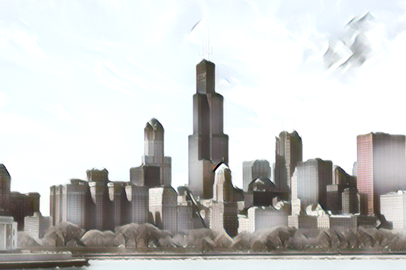
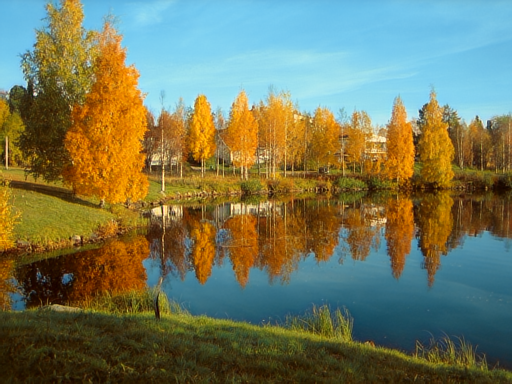
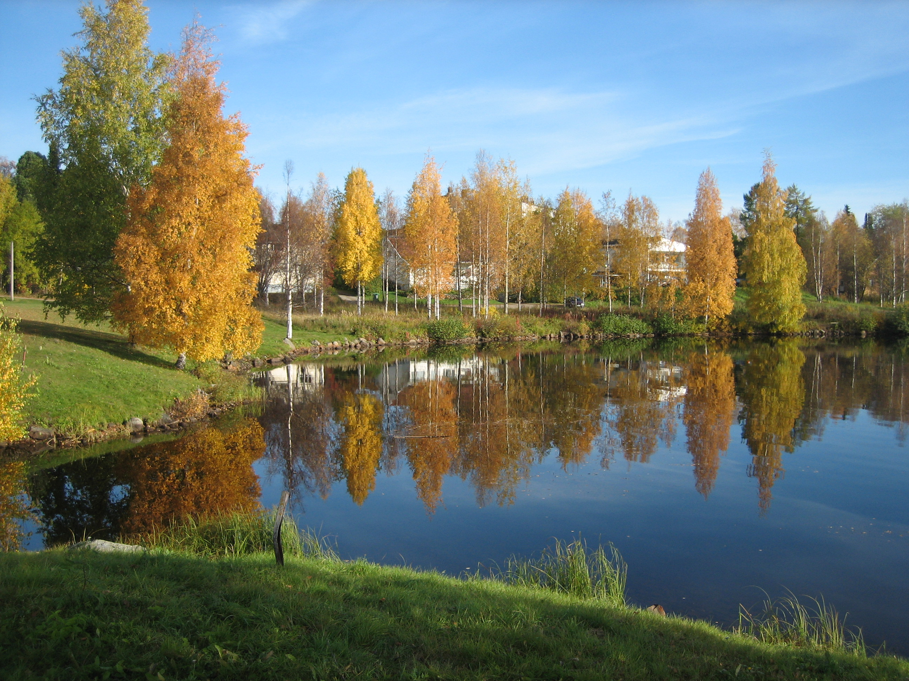

ART01
艺术风格迁移
提取绘画的笔触、色块和材质，让照片形成明显的艺术表达。
- 绘画质感与笔触映射
- 可调节风格强度
- 适合插画与创意作品

OUTPUT / ARTISTIC上传内容图和参考风格，在自己的电脑或手机上完成艺术风格与真实风格迁移。照片不离开设备。


没有云端上传，没有等待队列。模型和图片处理都发生在本地，断网也能继续创作。
根据参考图选择合适的迁移方式。艺术模式重构笔触与质感，真实模式专注颜色与光影。
提取绘画的笔触、色块和材质，让照片形成明显的艺术表达。

OUTPUT / ARTISTIC保持场景结构和自然纹理，迁移参考照片的色彩、光线与整体氛围。
直接比较生成前后的变化。结构保持清晰，风格来自你选择的参考图。
从电脑、相册或相机选择需要处理的照片。
使用任意绘画或照片作为视觉参考。
调整模式与强度，在设备上生成并保存作品。
所有版本都在本地运行。首次公开版本正在整理签名与安装包。
推荐的完整版本。支持 NVIDIA GPU 与 CUDA 加速，也可以切换为 CPU 运行。
更小、更通用，适合没有 NVIDIA 显卡或只需要 CPU 运行的电脑。
适用于 Android 10 及以上手机，支持系统硬件加速。
原生版本已经开始开发，完成签名与真机验证后开放。
!安装包由 GitHub Releases 提供，并附带 SHA-256 校验值；GPU 完整包的发布方式仍在优化。
不会。桌面版和手机版都在用户设备上完成模型推理，网站只用于展示和下载。
不需要。便携版已经包含运行环境，解压完整文件夹后即可启动。
可以。请选择 Windows CPU 版；GPU 版则专门为兼容的 NVIDIA 显卡准备。
不会。应用会按内容图比例调整尺寸，并将边长对齐到模型支持的规格。
它包含 PyTorch、CUDA 运行库和模型，确保新电脑不需要手动配置开发环境。
StyleMapping Studio 源于对图像风格迁移的研究，希望让更多人无需配置开发环境，也能在自己的设备上使用它。